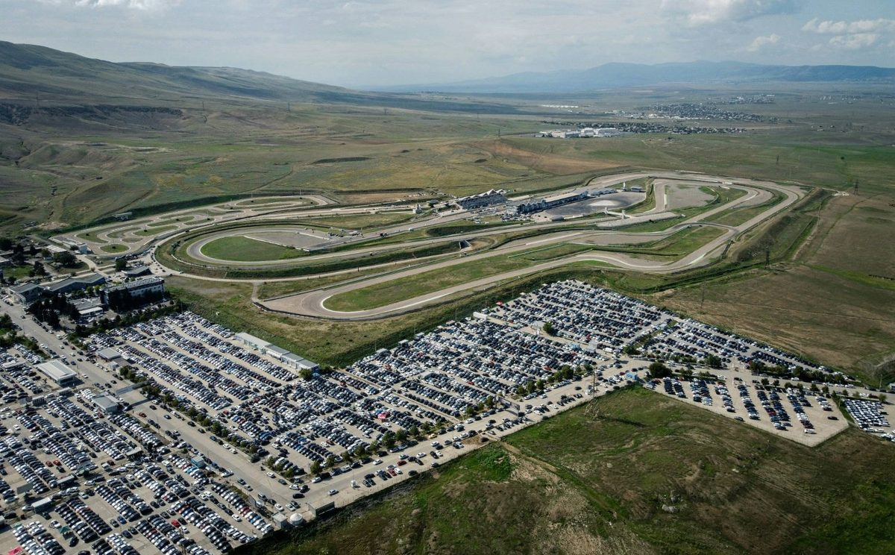

Dispatched or scheduled: why venue shuttle programs drift off track.
Most venue cart programs wait for a request. That one design choice decides how they behave when the whole crowd moves at once, and why nobody can forecast them.
Read the accessibility page for almost any large stadium, speedway, or festival and you'll find some version of the same sentence. Wait times may vary.
The Buffalo Bills tell guests that their golf cart team members patrol the parking lots and assist guests as needed, and that fans can call or text their location to request a ride. At Florida football games, disabled-guest carts serve fans first-come, first-served, and the school's free game-day ride service warns that a high volume of calls can mean waits. At CPKC Stadium in Kansas City, a limited number of golf carts carry fans with limited mobility from their parking space to the gate. Scottish Gas Murrayfield runs an accessible buggy that holds four guests at a time, and tells riders to expect waits of up to an hour leaving the stadium.
These are good programs. They're run by people who care, and they're honest with guests about what to expect. But they share a design choice, and that choice decides how they behave when the whole crowd moves at once.
They're dispatched.
What's the difference between dispatched and scheduled transportation?
A dispatched system waits for a request. Someone calls, radios, flags down a driver, or fills out a form, and a vehicle gets sent. Golf carts, sprinter vans, and on-call shuttles mostly run this way.
A scheduled system runs a fixed route with posted stops and a known frequency. The vehicle shows up whether anyone asked or not. City buses work like this. So do airport terminal trains.
Dispatch is a fine fit when demand is light and scattered. A concierge cart picking up one guest at a time works well in a hotel lobby. It gets harder when demand is dense and arrives in waves, which describes nearly every live event ever held.
Why do golf cart programs get overwhelmed at events?
Event demand doesn't spread out. It spikes when the gates open, again before the headliner, and hardest at the final whistle. A dispatched fleet sized for an average hour gets buried at the peak, and every request sitting in the queue is a person standing in a parking lot.
Small vehicles make the math worse. A six-seat cart carrying one party at a time spends a big share of its day driving back empty to the next call. Adding carts helps for a while, but each one brings another driver, more radio traffic, and one more vehicle weaving through pedestrians.
And the dispatcher is often working half blind. Requests arrive by radio, phone, and walk-up. Where's cart 14? How many people are waiting at Lot C? Unless someone built tracking into the program, the honest answer is that nobody knows until a driver checks in.
That's how a plan that looked solid on paper ends up like the 2024 Texas Eclipse festival in Burnet, where one attendee who uses a cane told Texas Standard she asked for an ADA cart and was told one wouldn't be free for another hour or two. She waited in the heat, then gave up and walked. A Burnet County sheriff's captain said he'd received several complaints about missing disability accommodations.
Why is a dispatched program so hard to forecast?
This is the part that matters most to whoever is paying for the program.
A scheduled route can be planned before the event. You know the loop length, the loop time, the number of vehicles, and the seats in each one. From that you get capacity per hour, and you can hold it up against expected attendance and the event schedule. You find out whether the plan works before the first guest arrives.
A dispatched program has no equivalent number. Its capacity depends on how requests happen to cluster, how far each trip runs, and how quickly drivers get reassigned. You learn whether it was big enough afterward, usually from the complaints.
A route has a shape. A cloud of carts answering radio calls has a queue nobody can see.
The same thing makes it hard to manage live. If stop 3 has a line, a supervisor can see it and add a vehicle, or run an express between the two busiest stops. There's nothing to look at in a dispatched program until the complaints start.
What does dispatch mean for ADA programs and liability?
Accessibility is where this matters most. Many venues run their ADA service by dispatch, which means guests with mobility needs are the ones waiting on a callback. Every slow pickup is a guest experience problem, and depending on the circumstances it can become a legal one. We've written before about how fast that demand is growing.
Scheduled routes give the venue something it can document. Here's the route. Here are the stops, with seating and shade. Here's the frequency, and here's how many accessible seats ran past each stop per hour. That record holds up a lot better than a call log when someone asks whether the program was adequate.
Running your shuttle program on a radio?
FlexTram plans fixed routes against your event schedule and supplies the vehicles to run them, on rental, lease, or as a turnkey plan.
Does this mean venues should get rid of their carts?
No. Carts are good at the odd jobs: a VIP pickup, a medical call, a runner for the production office. The question is what carries the volume. The busy corridors, lot to gate and gate to stage and tent to tent, should run on a schedule, and the carts can fill in around them.
Cities figured this out a long time ago. Buses and rail move the bulk of people on fixed lines, and taxis handle the trips that don't fit. Nobody tries to empty a stadium with taxis alone.
How FlexTram approaches it
FlexTram builds and runs the scheduled layer. One tow vehicle pulls up to 27 passengers with a single driver, with ADA access built in, on asphalt, grass, dirt, or gravel.
The vehicle is the easy part, though. The real work is the plan. We map routes against the event schedule, put stops where people actually collect, size the fleet to the peak hour, and then watch heat maps and crowd velocity once things are running so the plan can change while the event is still happening. At one Southern California site, that kind of planning let 8 FlexTrams replace 300 golf carts.
It looks a little different depending on the property:
- Festivals & Events
- Stadiums & Arenas
- Raceways & Motorsports
- Golf Courses
- Cruise Terminals
- Airports & FBOs
- Resorts & Hotels
- Warehouses & Logistics
A request line tells guests to wait. A schedule tells them when.
— The FlexTram Team
Frequently asked questions
What is the difference between dispatched and scheduled event transportation?
A dispatched system waits for a request: a guest calls, radios, flags down a driver, or fills out a form, and a vehicle is sent. Golf carts, sprinter vans, and on-call shuttles mostly run this way. A scheduled system runs a fixed route with posted stops and a known frequency, and the vehicle shows up whether anyone asked or not, the way a city bus or an airport terminal train does.
Why do golf cart shuttle programs get overwhelmed at stadiums and festivals?
Event demand arrives in waves: when gates open, before the headliner, and hardest at the final whistle. A dispatched fleet sized for an average hour gets buried at the peak, and every request in the queue is a person standing in a parking lot. Small vehicles make it worse, because a six-seat cart carrying one party at a time spends much of its day driving back empty to the next call, and the dispatcher often cannot see where every cart is or how many people are waiting at each lot.
Why is a dispatched shuttle program hard to forecast?
A scheduled route can be planned before the event from the loop length, loop time, number of vehicles, and seats per vehicle. Together those give a capacity per hour that can be checked against expected attendance and the event schedule. A dispatched program has no equivalent number. Its capacity depends on how requests happen to cluster, how far each trip runs, and how quickly drivers are reassigned, so whether it was big enough is only learned afterward.
What does dispatch mean for ADA transportation at venues?
Many venues run their ADA service by dispatch, which means guests with mobility needs are the ones waiting on a callback. At the 2024 Texas Eclipse festival, an attendee who uses a cane was told an ADA cart would not be free for another hour or two and eventually gave up and walked. A scheduled accessible route gives the venue something it can document: the route, the stops, the frequency, and how many accessible seats ran past each stop per hour.
Should venues get rid of golf carts entirely?
No. Carts are good at the odd jobs: a VIP pickup, a medical call, a runner for the production office. The question is what carries the volume. The busy corridors, lot to gate and gate to stage, should run on a schedule, with carts filling in around them. Cities work the same way: buses and rail move the bulk of people on fixed lines and taxis handle the trips that don't fit.
Related reading
Put the busy corridors on a schedule.
FlexTram offers rentals, long-term leases, and turnkey transportation plans for festivals, stadiums, raceways, campuses, and other large-footprint venues.